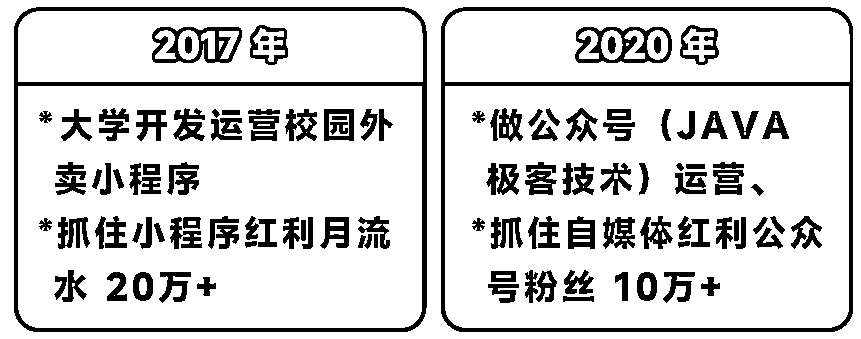
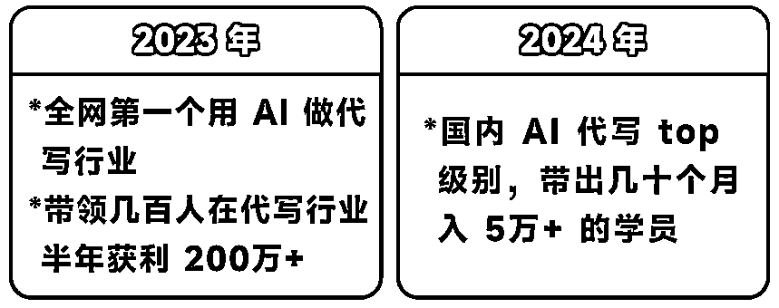
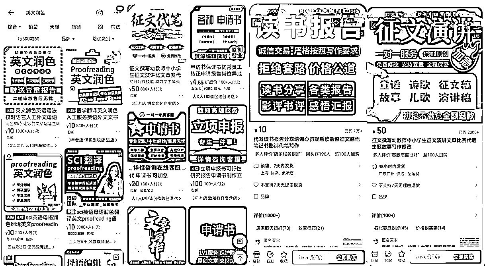
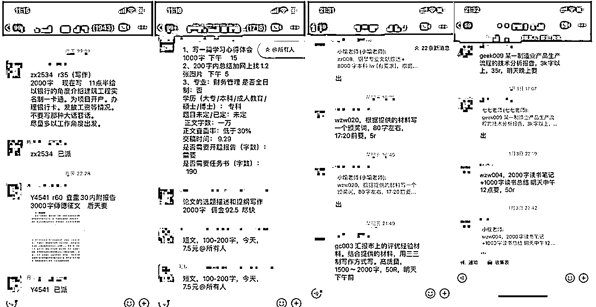
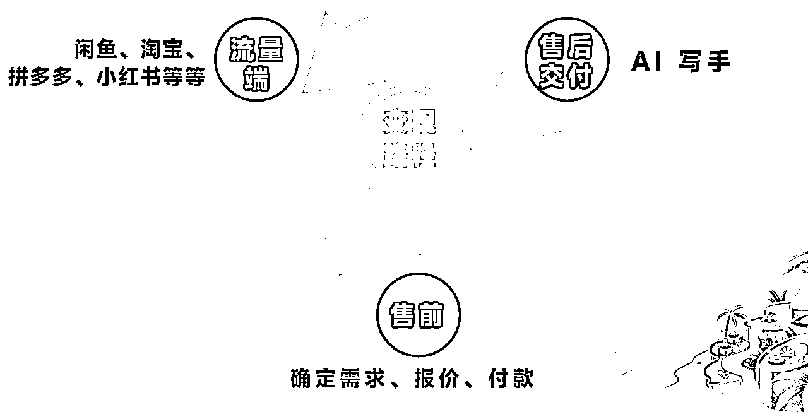
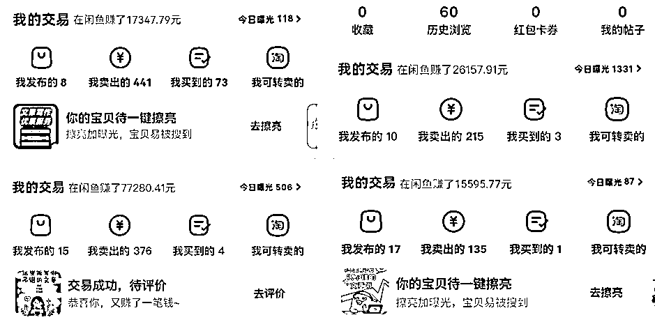
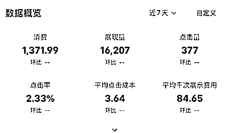
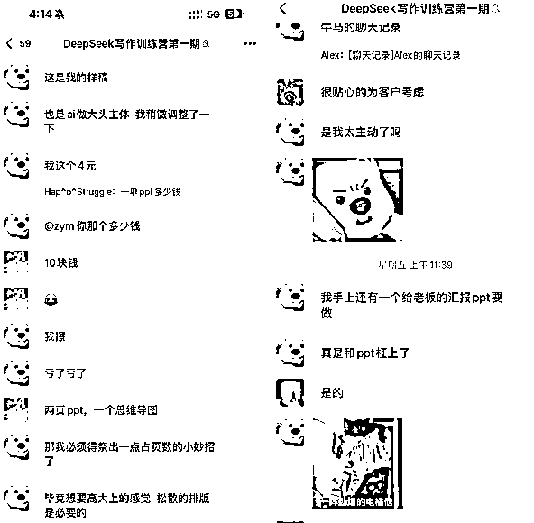
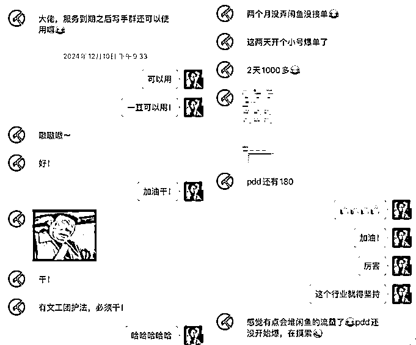
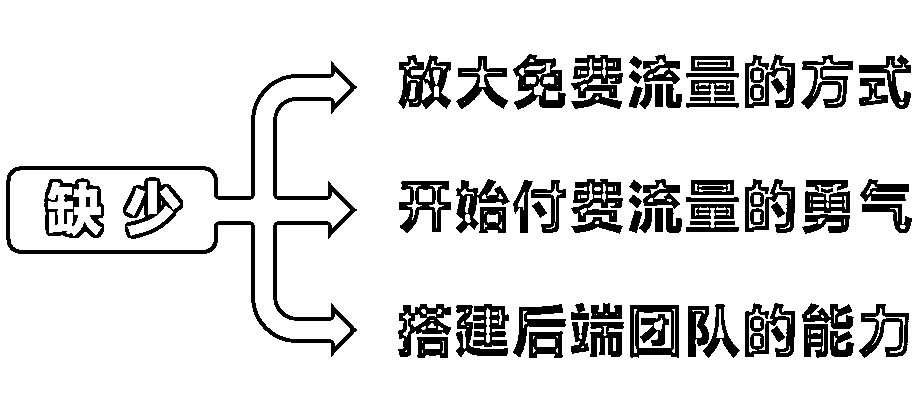

来源：https://xxhypdubtd.feishu.cn/docx/UiHcdMoHJohjHMx7f3qcSOKGnPf
掩体，96 年，创业 8 年，AI 代写 top
我是从2023年1月份开始接触AI代写项目的。当时ChatGPT刚刚火起来，由于我之前做过校园项目，手里有大量学生资源，最初想卖ChatGPT账号给学生，但发现学生接受能力较低，需要科普什么是ChatGPT，这个模式跑不通。
于是我开始寻找能变现的行业，找到了AI代写这个项目。我想找一些已经有商业闭环的行业来落地AI的文本输出能力。为什么要坚定做这个事情？因为根据我之前的创业经验，有红利的时候一定要去抓，站在红利上才能事半功倍。


AI代写就是利用AI的文字输出能力，结合已经存在的商业闭环——文章写作服务（代写）。文章写作在淘宝等电商平台上是一个正常的虚拟类目，已经形成了完整的商业闭环。
变现逻辑简单粗暴，有顾客需求，他愿意买你用 AI 系统的文档。
线上经常在各个平台找文档，看它到底是什么样的市场。
AI代写是一个大分类，下面细分下来的每一个类目都值得深究。
不是说你要去做一个分类，其实就是需要找它背后的一个付费人群。

要针对这类人去做一个AI 工具，或者用其他东西来更好地去服务这部分付费人群。
之前创业经验告诉我：红利必须抓。
亲自下场，大量试错，失败是必然的，但成功一次就可以。
角色一：写手--只管用 AI 写单子，不直接对接顾客
做为小白，开始可以接一些淘宝订单，使用ai完成写作任务，现在淘宝订单激烈，建议找更细分的领域，比如数据分析等商家比较缺乏的领域，淘宝商家会拉群，在群里抢单，一般10～20块钱一单。
当时的我一开始写单才25块钱，很兴奋的原因不是赚到25块钱，而是我看到整个市场，看到用AI可以做到整个闭环。
我本身写作能力很差，从小到大老师都没有夸过我，但是丝毫不影响我在这行业达到不错的结果。原本你的能力只有20~40分，但是有了AI，整体协调能力可以达到60分~70分，但是顾客可能要的文档只需要50分，这就形成【价值匹配】。

当我做整个市场调研后，发现它的市场份额很大，不是只挣5元、10元，那时就萌生了自己去做流量的想法。
角色二：商家：只管运营店铺，直接对接顾客，交给 AI
从流量端接下来再给顾客报价，能接受价格就成交，接单后可以自己用Ai写他的稿子或者交给写手完成，这模式需要处理流量获取、报价、成交等环节，但收益更高。
写手更容易拿到正反馈，亲自验控，但收益低；
运营店铺正反馈慢，精力消耗多，但天花板高。
没有哪个好哪个坏，适合自己的就行。
一定要做商业闭环，不做某个点。上帝视角很重要。
先从流量端获取订单，确定需求报价，付费是个很复杂的过程，因为AI代写是虚拟商品，没有标价，不像耳机手机固定价格，给顾客报价是我们一直在探索的事情。
我们发现每一个年龄段都有他们自己承受的价格，其实我们要找出它背后的人群。
免费流量和付费流量区别就是，付费更稳定，免费没成本。
闲鱼：适合小白入局，只要账号足够多，就能触发流量池。一个商品进入流量池后可持续10天左右。
小红书：也是免费流量平台。
免费需要对抗不确定性，账号安全、流量波动等。

付费需要投流，难点在于成交上的报价，当你成交后，流量能覆盖投流成本，持平或者更高，或者ROI能达到10或以上收益，那做付费流量是最好的事情。
各大电商平台做文章写作类目优缺点
淘宝：竞争最大，店铺需达到一定等级才能推广，类目推广有等级限制，淘宝被几家巨头霸占，除非砸钱或者积累了一批私域流量，要不很难有效果；
拼多多：相对比淘宝竞争力小，肯花钱推广，流量还是不错的，但他有致命的缺点：容易违规，违规处罚重，只要你不小心引流或者违规词聊天就会迎来关店的处罚
巨量引擎等广告平台：流量稳定，只要会投流，知道投哪些类目，就可以获取订单。小红书聚光，我们一天差不多消耗四五千。
付费流量的难点在于成交价格的确定和ROI的平衡。


AI 代写知识付费的逻辑：帮助用户提升写作能力，帮助小白解决流量获取、报价、交付等环节的商业闭环问题。
他本来写作能力只有20分，但是通过你的教程或者培训，让大家的能力达到40分，他就可以通过这个技能去更多类目上去变现。

小白当写手时做免费流量或者付费流量，但是会遇到报价问题，市面上四五百成交，他一百就成交了。
而成交对整个流量池会很友好，这些流量大概率会产生大量的复购，平均复购率平均是20%左右，前期价格定很低，下次高价就不好接受。
一个强大的团队在他背后做支撑，帮他打通整个商业闭环，他是很愿意给你付费，他可能只需要搞流量，又或者来单后可以第一时间报价。

自营和知识付费的平衡点：相辅相成
自营盘稳定，付费后端保证才稳定
自营有大量订单，可以统筹给学员，具体是谈单还是交货，都去做大量的尝试。他们更清楚一线情况，代写类目很多，有些好的类目不为人知更有意思。
做代写，虽然单价比较高，但是整个学术类的交互周期可能比较长，可能前期能月入百万，后面几个月几乎没有收益，有明显的季节性。最近我们发现一些很好的项目，交互周期两三天，内容是一个文字稿加一个ppt，单价达到600左右，并且复购率很高。
选择好的细分类目的关键其实是选背后人群，就是他的消费力、购买场景、购买背景目的，复购率等。其实他们的消费力很夸张，因此我们会测不同类目不同报价，测试人群的接受能力。比如家长人群，很愿意为孩子消费，并且高客单。
去年看到了一些学员计划全职，但就只有几位干得不错，虽然从0～1能月入一万，但是抗风险能力低，就会遇到1～10放大的他自己的团队的问题。

从0～1的小白，想去放大，面临的第一个问题就是怎么放大流量的方式，怎么批量起号，第二个问题就是开启付费流量的统计，从免费流量平台跑通需要对抗不确定性，避免这类风险。有个学员半年才做20完，谈恋爱还带不上15个手机，终于有勇气转而做付费流量，后端形成自己的模型，服务流量更有确定性。第三个问题是搭建后端团队能力不足，一般来一单接一单，但是有后端团队承接可以谈高价，根据背后人群对于信息决策能力不同，可以每个不同类目做不同尝试不同报价。